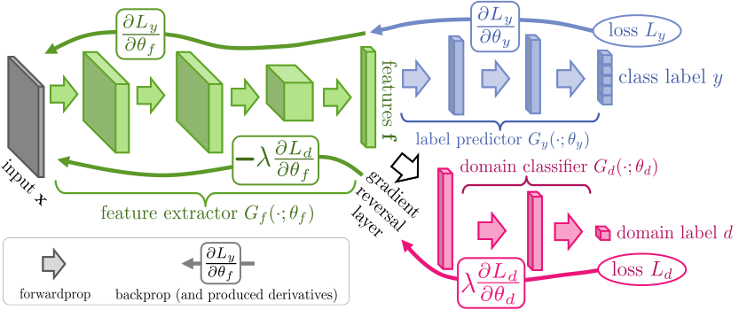

Important
This code used a lot of GPU, due to time constraints and the fact that I am not able to use GPU, I only used , even though I don't reach the desired accuracy, It can be seen that the model is on the right track. I hope this helps you in some way. (Each model took about 1 hour to train with the standard Colab GPU)
GANs – Part 3: Adversarial domain adaptation (SVHN → MNIST)
Author: Sebastian Bujwid bujwid@kth.se
Refer to ./README.md for general comments.
Scope
- Train a CNN on SVHN digits classification. Evaluate it on MNIST (same classes)
- Implement and train an adversarial domain adaptation model DANN. The model trains on SVHN data together with MNIST samples without labels. Evaluate the trained model on MNIST

Domain adaptation
A model trained on data source would often perform the same task much worse on data from a different source (different data distribution). Consider, for example, a digit classifier trained on SVHN and evaluated on MNIST, as in this part of the practical.
The goal of domain adaptation is to use source domain data (SVHN in our case) to train a model that works well on the target domain (MNIST in our case). In domain adaptation, we consider source and target tasks to be the same (classification of digits). In this setting, one typically assumes access to target domain samples but not their labels.
Domain adaptation can be especially beneficial when source domain data is easily available but target data is difficult to label.
Many factors might cause the difficulty of labeling target data.
It could be because labeling target data is just too costly. Consider, for example, the cost of labeling real (target) data for training a robot, compared to using automatically extracting ground-truth from a robot simulator (e.g., GraspGAN, GANerated Hands), or medical data that requires specialized domain knowledge to annotate and data from different facilities or capturing devices (such as CT scans) can have noticeable differences (e.g., Mahmood et al. (2018), Chen et al. (2019)).
But the challenges of labeling target data can also be due to time constraints when conditions quickly change (e.g., a pandemic), or in extreme cases, the conditions might change (e.g., problem difficulty increasing) even as a result of deploying a model that has a direct or indirect impact on the environment (e.g., consider social media companies using "AI" to detect hate speech, etc.).
There exist different domain adaptation approaches. In this practical, however, we will only use an adversarial domain adaptation where a discriminator is used to force the model to learn domain-invariant representation (similar for between the source & target domains). That should hopefully make the model overfit less to the source domain.
I will use 3 epochs due to GPU constraints
num_epochs = 3
try:
from omegaconf import OmegaConf
except ModuleNotFoundError:
%pip install omegaconf
from omegaconf import OmegaConf
import jax
import jax.numpy as jnp
from jax.example_libraries import optimizers, stax
from jax import jit
jax.devices()
[CudaDevice(id=0)]
import tensorflow as tf
import tensorflow_datasets as tfds
import numpy as np
import matplotlib.pyplot as plt
import seaborn as sns
seed = 42
Implementation
Loading data
def mnist_to_svhn_format(images):
return tf.image.grayscale_to_rgb(
tf.image.resize(images, [32 ,32])
)
def preprocess_imgs(images):
return tf.image.per_image_standardization(
tf.cast(images, tf.float32) / 255.,
)
def mnist_dataset(data):
ds = data.map(lambda x: (preprocess_imgs(mnist_to_svhn_format(x['image'])), x['label']),
num_parallel_calls=tf.data.experimental.AUTOTUNE)
ds = ds.cache() # You might want to remove it if have little memory
ds = ds.shuffle(100000)
return ds
def svhn_dataset(data):
ds = data.map(lambda x: (preprocess_imgs(x['image']), x['label']),
num_parallel_calls=tf.data.experimental.AUTOTUNE)
ds = ds.cache() # You might want to remove it if have little memory
ds = ds.shuffle(100000)
return ds
data_mnist, data_mnist_dev = tfds.load(
'mnist',
split=['train[:50%]', 'train[50%:]'],
shuffle_files=True,
data_dir='./data_dir')
data_mnist_test = tfds.load('mnist', split='test', shuffle_files=True,
data_dir='./data_dir')
data_svhn = tfds.load('svhn_cropped', split='train', shuffle_files=True,
data_dir='./data_dir')
data_svhn_test = tfds.load('svhn_cropped', split='test', shuffle_files=True,
data_dir='./data_dir')
ds_mnist = mnist_dataset(data_mnist)
ds_mnist_dev = mnist_dataset(data_mnist_dev)
ds_mnist_test = mnist_dataset(data_mnist_test)
ds_svhn = svhn_dataset(data_svhn)
ds_svhn_test = svhn_dataset(data_svhn_test)
Downloading and preparing dataset 11.06 MiB (download: 11.06 MiB, generated: 21.00 MiB, total: 32.06 MiB) to data_dir/mnist/3.0.1... Dl Completed...: 0%| | 0/5 [00:00<?, ? file/s] Dataset mnist downloaded and prepared to data_dir/mnist/3.0.1. Subsequent calls will reuse this data. Downloading and preparing dataset 1.47 GiB (download: 1.47 GiB, generated: 1.09 GiB, total: 2.56 GiB) to data_dir/svhn_cropped/3.1.0... Dl Completed...: 0 url [00:00, ? url/s] Dl Size...: 0 MiB [00:00, ? MiB/s] Generating splits...: 0%| | 0/3 [00:00<?, ? splits/s] Generating train examples...: 0%| | 0/73257 [00:00<?, ? examples/s] Shuffling data_dir/svhn_cropped/incomplete.29I6G6_3.1.0/svhn_cropped-train.tfrecord*...: 0%| | 0/73… Generating test examples...: 0%| | 0/26032 [00:00<?, ? examples/s] Shuffling data_dir/svhn_cropped/incomplete.29I6G6_3.1.0/svhn_cropped-test.tfrecord*...: 0%| | 0/260… Generating extra examples...: 0%| | 0/531131 [00:00<?, ? examples/s] Shuffling data_dir/svhn_cropped/incomplete.29I6G6_3.1.0/svhn_cropped-extra.tfrecord*...: 0%| | 0/53… Dataset svhn_cropped downloaded and prepared to data_dir/svhn_cropped/3.1.0. Subsequent calls will reuse this data.
(Task) Implement sparse_softmax_cross_entropy function
The function should compute the cross-entropy between the input targets and softmax of the logits (or be equivalent to these operations).
"Sparse" refers to the targets being int values indicating target classes and not probability distributions over all class values.
Similarly, to sigmoid_cross_entropy from Part 1, implementing softmax + cross-entropy as a single function can be beneficial.
import jax
import jax.numpy as jnp
def sparse_softmax_cross_entropy(*, targets, logits):
"""
Compute sparse softmax cross-entropy loss.
:param targets: Sparse ground truth class indices, shape (batch_size,)
:param logits: Logits from the model, shape (batch_size, num_classes)
:return: Sparse softmax cross-entropy loss, scalar.
"""
assert targets.ndim == logits.ndim - 1
exp_logits = jnp.exp(logits)
softmax_probs = exp_logits / jnp.sum(exp_logits, axis=-1, keepdims=True)
target_probs = softmax_probs[jnp.arange(len(targets)), targets]
loss = -jnp.log(target_probs)
return loss
(Task) Test the sparse_softmax_cross_entropy function
logits = jnp.array(
[
[-0.12, -5., 4.2, -1.],
[0.42, 0.13, -0.1, -0.48],
[0.1, 0.2, 0.3, 0.4,],
]
)
targets = jnp.array([0, 3, 2])
returned = sparse_softmax_cross_entropy(targets=targets, logits=logits)
expected_mean_ce_loss = 2.53088073318352
np.testing.assert_allclose(expected_mean_ce_loss, jnp.mean(returned))
(Optional task) Numerically stable sparse_softmax_cross_entropy loss
Can you implement the function such that it logits with a very large magnitude? Try rewriting the entire expression! Think of over- and underflows!
Hint: You might find jax.nn.logsumexp useful!
import jax
import jax.numpy as jnp
def sparse_softmax_cross_entropy(*, targets, logits):
"""
Numerically stable sparse softmax cross-entropy loss.
:param targets: Sparse ground truth class indices, shape (batch_size,)
:param logits: Logits from the model, shape (batch_size, num_classes)
:return: Sparse softmax cross-entropy loss, scalar.
"""
assert targets.ndim == logits.ndim - 1, "Targets must have one dimension less than logits"
print(targets.shape)
print(logits.shape)
# Compute log-sum-exp in a numerically stable way
logsumexp = jax.nn.logsumexp(logits, axis=-1) # Shape: (batch_size,)
# Gather logits of the true class
true_logits = logits[jnp.arange(logits.shape[0]), targets] # Shape: (batch_size,)
# Compute the cross-entropy loss
loss = -true_logits + logsumexp # Shape: (batch_size,)
# Return the mean loss across the batch
return jnp.mean(loss)
returned = sparse_softmax_cross_entropy(targets=targets, logits=logits * 1000.)
expected_mean_ce_loss = 1773.3333333333333
np.testing.assert_allclose(expected_mean_ce_loss, jnp.mean(returned))
(3,) (3, 4)
import jax
import jax.numpy as jnp
def sparse_softmax_cross_entropy(*, targets, logits):
"""
Compute sparse softmax cross-entropy loss.
:param targets: Sparse ground truth class indices, shape (batch_size,)
:param logits: Logits from the model, shape (batch_size, num_classes)
:return: Sparse softmax cross-entropy loss, scalar.
"""
assert targets.ndim == logits.ndim - 1
exp_logits = jnp.exp(logits)
softmax_probs = exp_logits / jnp.sum(exp_logits, axis=-1, keepdims=True)
target_probs = softmax_probs[jnp.arange(len(targets)), targets]
loss = -jnp.log(target_probs)
return loss
Training CNN classifier on SVHN classification
w_init = jax.nn.initializers.normal(stddev=0.02)
def create_cnn():
return stax.serial(
stax.Conv(128, (3, 3), padding='SAME', W_init=w_init),
stax.BatchNorm(),
stax.LeakyRelu,
stax.Conv(128, (3, 3), padding='SAME', W_init=w_init),
stax.BatchNorm(),
stax.LeakyRelu,
stax.Conv(128, (3, 3), strides=(2, 2), padding='SAME', W_init=w_init),
stax.BatchNorm(),
stax.LeakyRelu,
stax.Conv(256, (3, 3), padding='SAME', W_init=w_init),
stax.BatchNorm(),
stax.LeakyRelu,
stax.Conv(256, (3, 3), padding='SAME', W_init=w_init),
stax.BatchNorm(),
stax.LeakyRelu,
stax.Conv(256, (3, 3), strides=(2, 2), padding='SAME', W_init=w_init),
stax.BatchNorm(),
stax.LeakyRelu,
stax.Conv(512, (3, 3), padding='SAME', W_init=w_init),
stax.BatchNorm(),
stax.LeakyRelu,
stax.Conv(256, (3, 3), padding='SAME', W_init=w_init),
stax.BatchNorm(),
stax.LeakyRelu,
stax.Conv(128, (3, 3), strides=(2, 2), padding='SAME', W_init=w_init),
stax.BatchNorm(),
stax.LeakyRelu,
stax.AvgPool(window_shape=(4, 4)),
stax.Flatten
)
def create_label_predictor():
return stax.serial(
stax.Dense(128, W_init=w_init), stax.BatchNorm(axis=0), stax.LeakyRelu,
stax.Dense(128, W_init=w_init), stax.LeakyRelu,
stax.Dense(10, W_init=w_init)
)
def plot_metrics(metrics_dict, title=None):
fig, axs = plt.subplots(1, len(metrics_dict))
if title:
fig.suptitle(title)
for i, (key, vals) in enumerate(metrics_dict.items()):
marker = 'o' if 'epoch' in key else None
axs[i].plot(vals, marker=marker)
axs[i].set_title(key)
if 'acc' in key:
axs[i].set_ylim([0, 1.1])
plt.show()
def accuracy(a, b):
return jnp.mean(a == b)
import tqdm
import functools
from IPython.display import clear_output
def create_and_train_classifier(hparams, data, eval_data=None):
cnn_init, cnn_apply = create_cnn()
dense_init, dense_apply = create_label_predictor()
key = jax.random.PRNGKey(seed)
key, key_cnn, key_pred = jax.random.split(key, 3)
data_input_shape = (-1, 32, 32, 3)
cnn_output_shape, cnn_params = cnn_init(key_cnn, data_input_shape)
_, dense_params = dense_init(key_pred, cnn_output_shape)
def split_params(params):
return params[:len(cnn_params)], params[len(cnn_params):]
opt_init, opt_update, get_params = optimizers.adam(
step_size=hparams.lr, b1=hparams.beta1
)
opt_state = opt_init(cnn_params + dense_params)
def loss_fn(cnn_params, dense_params, x, y):
pred_y_logits = dense_apply(dense_params, cnn_apply(cnn_params, x))
loss = jnp.mean(
sparse_softmax_cross_entropy(targets=y, logits=pred_y_logits),
axis=0
)
return loss, pred_y_logits
def evaluate(opt_state, eval_data):
cnn_params, dense_params = split_params(get_params(opt_state))
loss_fn_jit = jax.jit(loss_fn)
loss_vals, acc_vals = [], []
for i, (x, y) in enumerate(tqdm.tqdm(
tfds.as_numpy(eval_data.batch(hparams.batch_size).prefetch(tf.data.experimental.AUTOTUNE)),
desc='evaluation'
)):
loss, pred_y_logits = loss_fn_jit(cnn_params, dense_params, x, y)
acc = accuracy(y, jnp.argmax(pred_y_logits, axis=-1))
loss_vals.append(loss)
acc_vals.append(acc)
return jnp.array(loss_vals).mean(), jnp.array(acc_vals).mean()
@jax.jit
def train_step(step, opt_state, x, y):
cnn_params, dense_params = split_params(get_params(opt_state))
(loss, pred_y_logits), (cnn_grads, dense_grads) = jax.value_and_grad(
loss_fn, argnums=(0, 1), has_aux=True)(cnn_params, dense_params, x ,y)
opt_state = opt_update(step, cnn_grads + dense_grads, opt_state)
return loss, pred_y_logits, opt_state
metrics = {'loss': [], 'acc': []}
eval_metrics = {'epoch_loss': [], 'epoch_acc': []}
best_model = {'epoch': -1, 'eval_acc': -1., 'opt_state': None}
try:
total_step = 0
for epoch in range(hparams.epochs):
for x, y in tqdm.tqdm(
tfds.as_numpy(data.batch(hparams.batch_size).prefetch(tf.data.experimental.AUTOTUNE)),
desc='training'
):
loss, pred_y_logits, opt_state = train_step(total_step, opt_state, x, y)
acc = accuracy(y, jnp.argmax(pred_y_logits, axis=-1))
metrics['loss'].append(loss)
metrics['acc'].append(acc)
total_step += 1
if eval_data is not None:
eval_loss, eval_acc = evaluate(opt_state, eval_data=eval_data)
eval_metrics['epoch_loss'].append(eval_loss)
eval_metrics['epoch_acc'].append(eval_acc)
if eval_acc > best_model['eval_acc']:
best_model = {'epoch': epoch, 'eval_acc': eval_acc, 'opt_state': opt_state}
clear_output()
print('-' * 30, 'epoch', epoch, '-' * 30)
plot_metrics(metrics, title='Train')
if eval_data is not None:
plot_metrics(eval_metrics, title='Eval')
print(f'Eval_metrics: epoch_loss {eval_metrics["epoch_loss"][-1]}'
f'\tepoch_acc {eval_metrics["epoch_acc"][-1]}')
except KeyboardInterrupt:
print(f'Interrupted at epoch {epoch}.')
print(f'Returning model from epoch: {best_model["epoch"]}, eval_acc: {best_model["eval_acc"]}')
return functools.partial(evaluate, best_model['opt_state'])
First, let's train a CNN on SVHN and measure it's performance on the SVHN test set during training.
hparams = OmegaConf.create({
'epochs': num_epochs,
'batch_size': 128,
'lr': 0.001,
'beta1': 0.99,
})
eval_fn = create_and_train_classifier(hparams, ds_svhn, eval_data=ds_svhn_test)
------------------------------ epoch 2 ------------------------------


Eval_metrics: epoch_loss 0.24736979603767395 epoch_acc 0.9298917055130005 Returning model from epoch: 2, eval_acc: 0.9298917055130005
As you hopefully see, the model achieves pretty high accuracy on SVHN ().
Now, let's evaluate the trained model on MNIST-dev (validation set). As you see the performance is much worse!
eval_fn(ds_mnist_dev)
evaluation: 100%|██████████| 235/235 [00:01<00:00, 120.33it/s] (Array(0.98951, dtype=float32), Array(0.7138076, dtype=float32))
Now, let's try some more runs of training with some different hyperparameter settings, while monitoring the model's performance on the MNIST-dev set!
hparams = OmegaConf.create({
'epochs': num_epochs,
'batch_size': 128,
'lr': 0.001,
'beta1': 0.99,
})
eval_fn = create_and_train_classifier(hparams, ds_svhn, eval_data=ds_mnist_dev)
------------------------------ epoch 2 ------------------------------


Eval_metrics: epoch_loss 1.0258487462997437 epoch_acc 0.7037123441696167 Returning model from epoch: 2, eval_acc: 0.7037123441696167
hparams = OmegaConf.create({
'epochs': num_epochs,
'batch_size': 128,
'lr': 0.0001,
'beta1': 0.5,
})
eval_fn = create_and_train_classifier(hparams, ds_svhn, eval_data=ds_mnist_dev)
------------------------------ epoch 2 ------------------------------


Eval_metrics: epoch_loss 0.9901873469352722 epoch_acc 0.7230275273323059 Returning model from epoch: 2, eval_acc: 0.7230275273323059
Domain adaptation: DANN
In this part we will implement the
DANN
model and use to for SVHN → MNIST adaptation.
As shown on the figure below, DANN has three component networks: feature extractor, label predictor, and domain classifier.
Label predictor is trained with only source data, as for target data no labels are used.
The goal of the domain classifier (discriminator) is to distinguish features of the source vs. target domain samples. Therefore, in order to fool the discriminator, the feature extractor (generator) has to make the features of source and domain samples indistinguishable, while preserving enough relevant information to allow the label predictor still correctly classify source samples.
In GAN training, one typically uses two separate updates, separate for the generator and discriminator.
DANN however, introduced a Gradient Reversal Layer which reverses the gradients from the discriminator. Thanks to that all components can updated with just a single update.

(Task) Implement gradient reversal layer {#task-implement-gradient-reversal-layer }
The layer should in the forward pass behave like an identity function. However, in the backward pass it should reverse the gradients and multiply them by l.
You might want to remind yourself how automatic differentation, back propagation, and chain rule of derivatives work!
@jax.custom_jvp
def grad_reverse(x, l):
# Just an identity function in the forward pass
return x
@grad_reverse.defjvp
def grad_reverse_jvp(primals, tangents):
# Extract the inputs from the tuples
x, l = primals
dx, dl = tangents
return x, l * (-dx)
grad_reverse(jnp.array(5.), 2)
Array(5., dtype=float32, weak_type=True)
(Task) Test gradient reversal layer {#task-test-gradient-reversal-layer }
l = 0.5
def f(x):
return jnp.sin(grad_reverse(x, l)) * 5.
x = jnp.array(-5.)
np.testing.assert_almost_equal(x, grad_reverse(x, l))
jax.grad(f)(x), jax.grad(jnp.sin)(x) * 5. * l
expected = jax.grad(jnp.sin)(x) * 5. * l * -1.
returned = jax.grad(f)(x)
np.testing.assert_almost_equal(returned, expected)
(Task) Implement DANN model
Task: Implement the training as in DANN model, using the model architecture as provided.
Remember to use the gradient reversal layer and that you need to only one update for all the component networks.
The model should be optimized for the sum of classification loss on the source data and domain discrimination loss (weighted by hparams.gan_loss_weight).
def sigmoid_cross_entropy(*, targets, logits):
assert targets.shape == logits.shape
loss = targets * jnp.log(1+jnp.exp(-logits)) + (1-targets)*(logits + jnp.log(1+jnp.exp(-logits)))
assert loss.shape == logits.shape, \
'cross-entropy loss is not expected here to be averaged over samples'
return loss
def discriminator_loss(*, real_logits, fake_logits):
# NOTE: the inputs are expected to be logits, not probabilities!
ones = jnp.ones_like(real_logits)
zeros = jnp.zeros_like(fake_logits)
real_loss = jnp.mean(sigmoid_cross_entropy(logits=real_logits, targets=ones))
fake_loss = jnp.mean(sigmoid_cross_entropy(logits=fake_logits, targets=zeros))
loss = real_loss + fake_loss
assert loss.shape == (), \
'discriminator loss is expected here to be averaged over samples'
return loss
def generator_loss(discriminator_fake_logits):
loss = jnp.mean(sigmoid_cross_entropy(logits=discriminator_fake_logits, targets=jnp.ones_like(discriminator_fake_logits)))
assert loss.shape == (), \
'discriminator loss is expected here to be averaged over samples'
return loss
def create_discriminator():
return stax.serial(
stax.Dense(128, W_init=w_init), stax.BatchNorm(axis=0), stax.LeakyRelu,
stax.Dense(128, W_init=w_init), stax.LeakyRelu,
stax.Dense(1, W_init=w_init)
)
def adaptation_weight(step, num_steps):
p = jnp.clip(step / num_steps, 0., 1.)
l = 2 / (1 + jnp.exp(-10. * p)) - 1
return l
def create_and_train_classifier_dann(hparams, src_data, tar_data, eval_data=None):
cnn_init, cnn_apply = create_cnn()
dense_init, dense_apply = create_label_predictor()
dis_init, dis_apply = create_discriminator()
key = jax.random.PRNGKey(seed)
key, key_cnn, key_pred, key_dis = jax.random.split(key, 4)
data_input_shape = (-1, 32, 32, 3)
cnn_output_shape, cnn_params = cnn_init(key_cnn, data_input_shape)
_, dense_params = dense_init(key_pred, cnn_output_shape)
_, dis_params = dis_init(key_dis, cnn_output_shape)
def split_params(params):
n = (len(cnn_params), len(dense_params), len(dis_params))
return (
params[:n[0]],
params[n[0]:n[0] + n[1]],
params[n[0] + n[1]:]
)
opt_init, opt_update, get_params = optimizers.adam(
step_size=hparams.lr, b1=hparams.beta1
)
opt_state = opt_init(cnn_params + dense_params + dis_params)
def loss_fn_classification(cnn_params, dense_params, x, y):
# Used for evaluation
pred_y_logits = dense_apply(dense_params, cnn_apply(cnn_params, x))
loss = jnp.mean(
sparse_softmax_cross_entropy(targets=y, logits=pred_y_logits),
axis=0
)
return loss, pred_y_logits
def evaluate(opt_state, eval_data):
cnn_params, dense_params, _ = split_params(get_params(opt_state))
loss_fn_cls_jit = jax.jit(loss_fn_classification)
loss_vals, acc_vals = [], []
for i, (x, y) in enumerate(tqdm.tqdm(
tfds.as_numpy(eval_data.batch(hparams.batch_size).prefetch(tf.data.experimental.AUTOTUNE)),
desc='evaluation'
)):
loss, pred_y_logits = loss_fn_cls_jit(cnn_params, dense_params, x, y)
acc = accuracy(y, jnp.argmax(pred_y_logits, axis=-1))
loss_vals.append(loss)
acc_vals.append(acc)
return jnp.array(loss_vals).mean(), jnp.array(acc_vals).mean()
# Implements the loss function described in the research paper
def loss_fn(params, x_src, y_src, x_tar, step):
cnn_params, dense_params, dis_params = split_params(params)
# Compute the adaptation weight dynamically if enabled, otherwise use a fixed weight
weight = hparams.gan_loss_weight if not hparams.dynamic_adaptation_weight else adaptation_weight(step, hparams.num_steps)
# Extract features for source and target inputs using the CNN
src_features = cnn_apply(cnn_params, x_src)
tar_features = cnn_apply(cnn_params, x_tar)
# Predict source logits using the dense (classification) layer
pred_src_logits = dense_apply(dense_params, src_features)
# Apply gradient reversal to source and target features for adversarial training
features_source_rev = grad_reverse(src_features, weight)
features_target_rev = grad_reverse(tar_features, weight)
# Calculate classification loss for source domain
cls_loss = jnp.mean(
sparse_softmax_cross_entropy(targets=y_src, logits=pred_src_logits)
)
# Apply the discriminator to the source and target features
dis_tar_logits = dis_apply(dis_params, tar_features)
dis_src_logits = dis_apply(dis_params, src_features)
# Calculate the adversarial loss for the discriminator
dis_loss = discriminator_loss(
real_logits=dis_src_logits, fake_logits=dis_tar_logits
)
# Combine classification loss and adversarial loss, weighted by the adaptation weight
loss = cls_loss + dis_loss * weight
return loss
# JIT-compiled training step for performance optimization
@jax.jit
def train_step(step, opt_state, x_src, y_src, x_tar):
# Retrieve the current model parameters from the optimizer state
params = get_params(opt_state)
# Compute the loss and gradients with respect to the model parameters
loss, grads = jax.value_and_grad(loss_fn)(params, x_src, y_src, x_tar, step)
# Forward pass: calculate the discriminator loss
dis_loss = discriminator_loss(
real_logits=dis_apply(split_params(params)[2], cnn_apply(split_params(params)[0], x_src)),
fake_logits=dis_apply(split_params(params)[2], cnn_apply(split_params(params)[0], x_tar))
)
# Update the optimizer state with the computed gradients
opt_state = opt_update(step, grads, opt_state)
# Forward pass: predict source logits for classification loss computation
pred_src_logits = dense_apply(split_params(params)[1], cnn_apply(split_params(params)[0], x_src))
# Split the parameters for further analysis or use
cnn_params, dense_params, dis_params = split_params(params)
cls_loss = jnp.mean(sparse_softmax_cross_entropy(targets=y_src, logits=pred_src_logits))
# Return the loss values and updated optimizer state
return (loss, cls_loss, dis_loss), pred_src_logits, opt_state
metrics = {'loss': [], 'cls_loss': [], 'dis_loss': [], 'acc': []}
eval_metrics = {'epoch_loss': [], 'epoch_acc': []}
best_model = {'epoch': -1, 'eval_acc': -1., 'opt_state': None}
total_step = 0
tar_data_iter = tar_data.repeat()\
.batch(hparams.batch_size).prefetch(tf.data.experimental.AUTOTUNE)\
.as_numpy_iterator()
try:
for epoch in range(hparams.epochs):
for x_src, y_src in tqdm.tqdm(
tfds.as_numpy(src_data.batch(hparams.batch_size).prefetch(tf.data.experimental.AUTOTUNE)),
desc='training'
):
x_tar, _ = next(tar_data_iter)
(loss, cls_loss, dis_loss), pred_src_logits, opt_state = train_step(
total_step, opt_state, x_src, y_src, x_tar)
acc = accuracy(y_src, jnp.argmax(pred_src_logits, axis=-1))
metrics['loss'].append(loss)
metrics['cls_loss'].append(cls_loss)
metrics['dis_loss'].append(dis_loss)
metrics['acc'].append(acc)
total_step += 1
if eval_data is not None:
eval_loss, eval_acc = evaluate(opt_state, eval_data=eval_data)
eval_metrics['epoch_loss'].append(eval_loss)
eval_metrics['epoch_acc'].append(eval_acc)
if eval_acc > best_model['eval_acc']:
best_model = {'epoch': epoch, 'eval_acc': eval_acc, 'opt_state': opt_state}
clear_output()
print('-' * 30, 'epoch', epoch, '-' * 30)
plot_metrics(metrics, title='Train')
if eval_data is not None:
plot_metrics(eval_metrics, title='Eval')
print(f'Eval_metrics: epoch_loss {eval_metrics["epoch_loss"][-1]}'
f'\tepoch_acc {eval_metrics["epoch_acc"][-1]}')
except KeyboardInterrupt:
print(f'Interrupted at epoch {epoch}.')
print(f'Returning model from epoch: {best_model["epoch"]}, eval_acc: {best_model["eval_acc"]}')
cnn_params, dense_params, dis_params = split_params(get_params(best_model['opt_state']))
return {
'eval_fn': functools.partial(evaluate, best_model['opt_state']),
'cnn': (cnn_apply, cnn_params),
'dense': (dense_apply, dense_params),
'dis': (dis_apply, dis_params)
}
After implementing the model, try to train it with a few different settings of hyperpameters.
Can you get results similar to the following?
How is it possible that the DANN model evaluated on data (MNIST) has a high accuracy but also such an insanely high cross-entropy?(The cross-entropy was actually much lower when no domain adaptation was done!)
- Can you explain it?
- Note that on 10-class classification by random chance one could expect the cross-entropy of 2.3
If you have some hypotheses about possible explainations, but also the reasons why it happen, try to verify them by investigating the trained models (returned from the function), or possibly even running some additional experiments.
High accuracy with high cross-entropy could happen because the model's predicted probabilities are less confident (spread out across classes), even if the top prediction is correct. DANN could prioritize aligning feature distributions over optimizing class probabilities, leading to softer outputs. This explains why cross-entropy might increase, even as accuracy improves.
hparams_dann = OmegaConf.create({
'epochs': num_epochs,
'batch_size': 128,
'lr': 0.0001,
'gan_loss_weight': 0.5,
'beta1': 0.5,
'num_steps': 10000,
'dynamic_adaptation_weight': False,
})
model = create_and_train_classifier_dann(
hparams_dann,
src_data=ds_svhn, tar_data=ds_mnist,
eval_data=ds_mnist_dev)
------------------------------ epoch 2 ------------------------------


Eval_metrics: epoch_loss 1.2095081806182861 epoch_acc 0.6378546357154846 Returning model from epoch: 2, eval_acc: 0.6378546357154846
model['eval_fn'](ds_mnist_test)
evaluation: 100%|██████████| 79/79 [00:02<00:00, 28.87it/s] (Array(1.1639146, dtype=float32), Array(0.65417325, dtype=float32))
hparams_dann = OmegaConf.create({
'epochs': num_epochs,
'batch_size': 128,
'lr': 0.0001,
'gan_loss_weight': 0.5,
'beta1': 0.5,
'num_steps': 10000,
'dynamic_adaptation_weight': True,
})
model = create_and_train_classifier_dann(
hparams_dann,
src_data=ds_svhn, tar_data=ds_mnist,
eval_data=ds_mnist_dev)
------------------------------ epoch 2 ------------------------------


Eval_metrics: epoch_loss 1.0495810508728027 epoch_acc 0.7074357271194458 Returning model from epoch: 2, eval_acc: 0.7074357271194458
hparams_dann = OmegaConf.create({
'epochs': num_epochs,
'batch_size': 128,
'lr': 0.0001,
'gan_loss_weight': 1.,
'beta1': 0.5,
'num_steps': 10000,
'dynamic_adaptation_weight': False,
})
model = create_and_train_classifier_dann(
hparams_dann,
src_data=ds_svhn, tar_data=ds_mnist,
eval_data=ds_mnist_dev)
------------------------------ epoch 2 ------------------------------


Eval_metrics: epoch_loss 1.2917193174362183 epoch_acc 0.5978280305862427 Returning model from epoch: 2, eval_acc: 0.5978280305862427
hparams_dann = OmegaConf.create({
'epochs': num_epochs,
'batch_size': 128,
'lr': 0.001,
'gan_loss_weight': 0.5,
'beta1': 0.99,
'num_steps': 10000,
'dynamic_adaptation_weight': False,
})
model = create_and_train_classifier_dann(
hparams_dann,
src_data=ds_svhn, tar_data=ds_mnist,
eval_data=ds_mnist_dev)
------------------------------ epoch 2 ------------------------------


Eval_metrics: epoch_loss 1.4342645406723022 epoch_acc 0.6338984966278076 Returning model from epoch: 2, eval_acc: 0.6338984966278076
hparams_dann = OmegaConf.create({
'epochs': num_epochs,
'batch_size': 128,
'lr': 0.0001,
'gan_loss_weight': 1.,
'beta1': 0.5,
'num_steps': 10000,
'dynamic_adaptation_weight': False,
})
model = create_and_train_classifier_dann(
hparams_dann,
src_data=ds_svhn, tar_data=ds_mnist,
eval_data=ds_mnist_dev)
------------------------------ epoch 2 ------------------------------


Eval_metrics: epoch_loss 1.5014591217041016 epoch_acc 0.5450243353843689 Returning model from epoch: 1, eval_acc: 0.5525708794593811
Finally, it is valuable for us to know, how long did it take you to finish this practical?